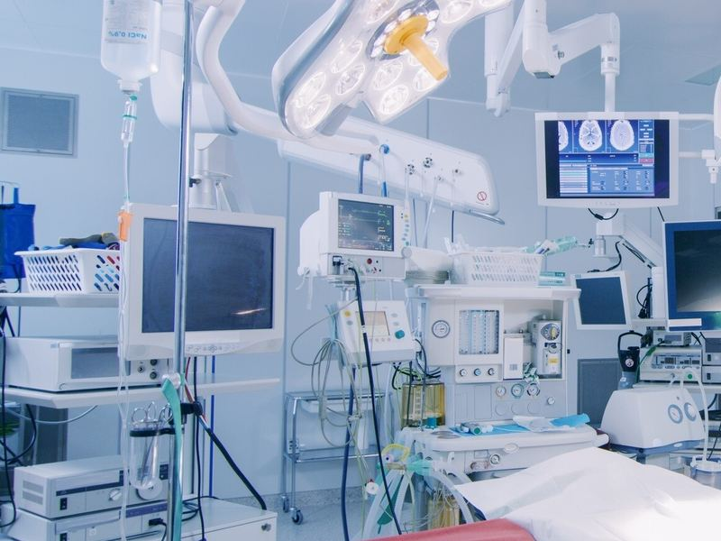
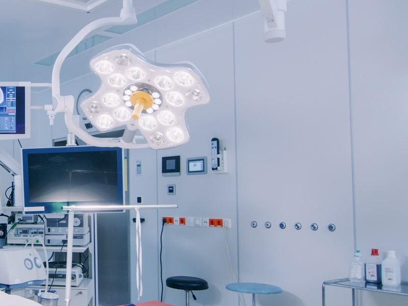
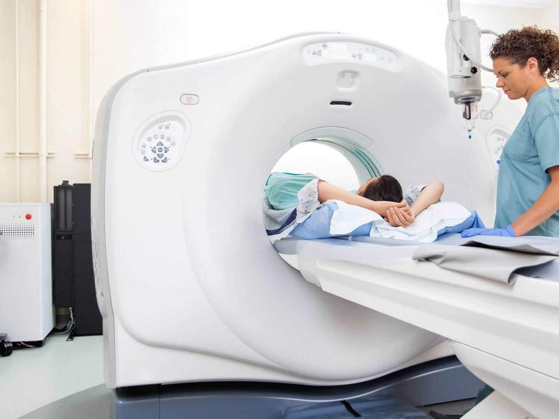
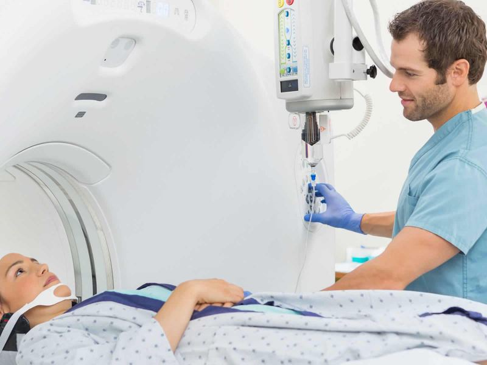

Laser Piles Treatment
Advanced laser treatment for piles (haemorrhoids) that shrinks the swelling with minimal cuts, less pain and a quick return to routine.
Know MoreLaser piles care, laparoscopic and general surgery, each explained clearly with its own detailed page.
Piles, fissure, fistula and more with laser and modern techniques
Advanced laser treatment for piles (haemorrhoids) that shrinks the swelling with minimal cuts, less pain and a quick return to routine.
Know More
Treatment for piles matched to the grade, from diet and medicines to rubber-band ligation, stapler and surgical removal.
Know MoreRelief for the sharp, tearing pain of an anal fissure with ointments, Botox or a short procedure such as lateral sphincterotomy.
Know More
Assessment of anal fistula, with MRI where needed, and repair chosen to cure the tract while protecting bowel control.
Know More
Treatment of painful, discharging sinuses at the top of the buttock cleft, from minimal procedures to flap repair.
Know MorePrompt drainage of painful perianal abscesses, with a plan to prevent a fistula from forming.
Know MoreKeyhole surgery and abdominal care for faster recovery

Minimally invasive keyhole procedures performed through tiny incisions, offering less pain, minimal scarring and a faster return to your normal routine.
Know More
Safe laparoscopic gallbladder removal for painful gallstones, with a clear treatment plan, quick recovery and compassionate support throughout your care.
Know More
Mesh-based hernia repair using open or laparoscopic techniques, selected for your hernia type, age and lifestyle to reduce the chance of recurrence.
Know More
Prompt laparoscopic appendectomy for appendicitis, with round-the-clock access to surgeons and a quick, comfortable recovery after the operation.
Know More
A keyhole look inside the abdomen to find the cause of unexplained pain or problems scans cannot clarify.
Know MoreOpen and laparoscopic surgery for bowel obstruction, perforation, tumours and other intestinal disease.
Know MoreStones, prostate, urethra, hydrocele and circumcision care

Advanced endoscopic removal of kidney and ureteric stones, planned around stone size, position and your risk of recurrence for lasting relief.
Know More
Telescopic removal of stones stuck in the ureter without any cut, usually as a day-care or short-stay procedure.
Know MoreTelescopic prostate surgery for urinary blockage caused by an enlarged prostate.
Know MoreTreatment for narrowing of the urinary passage causing weak stream and repeated infections.
Know MoreSafe surgical correction of hydrocele, the painless fluid swelling around the testis, as a short procedure.
Know More
Safe, hygienic circumcision for medical reasons using modern techniques, with private and comfortable care.
Know MoreLumps, thyroid, abscess, corn and toenail surgery
Safe day-care removal of lipomas, cysts and soft-tissue lumps after proper assessment, with neat stitching and minimal scarring for a natural result.
Know MoreCareful assessment and removal of breast lumps, with sensitive counselling and biopsy where required.
Know MoreSurgery for thyroid nodules, goitre and selected thyroid conditions, with attention to voice and calcium safety.
Know MoreTimely incision and drainage of abscesses anywhere on the body, with wound care until healed.
Know MoreTreatment for painful or recurring corns and calluses with extra care for patients with diabetes.
Know More
A short nail procedure for a toenail that keeps digging in, with care advice to stop it returning.
Know MoreScopes, urgent GI surgical care and diabetic foot surgery
A short telescopic examination of the food pipe, stomach and duodenum to find the cause of acidity, pain or bleeding.
Know MoreExamination of the rectum and colon to evaluate bleeding, change in bowel habit and polyps.
Know MoreRound-the-clock emergency operating team for acute abdominal conditions such as obstruction, perforation and severe infection, with rapid decision-making.
Know MoreEarly assessment and surgical care for diabetic foot ulcers and infections to protect the limb.
Know MoreIf you notice any of these concerns, an early consultation with Dr. Shinde is the right first step.
+91 97668 15782Book a ConsultationTalk to our surgeon today. Honest advice, no pressure.